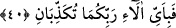
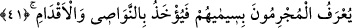

“İnsanlardan ve cinlerden hiç bir ferd günahından sorulmaz” demektir. Temîm deyip
de oğlu kasdedildiği gibi âyetteki “cân”dan maksad cin’dir.
40. O halde Rabbinizin nimetlerinden hangisini yalanlayabilirsiniz?
Faydalarının çokluğuna rağmen zikredilen şeyleri haber vermek sizi kötülüğe götüren
şeylerden sakındırmak içindir.
Bu âyette ruh insinin cennetleri ve ibâdet nurlarının maddî ve mânevî parlaklıklarına
işâret olduğu gibi, günah ve inad karanlıklarının, azgınlık zincirleri ve isyanın esaret
halkalarının karanlık nefis cin’inin yüzlerinde ve itâattan kaçan inadcı boyunlarında
toplandığına da işâret vardır. Allah’ın emrine bağlı kullarına nimetlerini verdiği ve
isyanda inad eden kullarından da intikam aldığı o günde, düşmanlarından intikam
alması, dostlarına karşı bir nimettir. Bu sebepledir ki, “Böylece zulmeden toplumun
kökü kesildi. Hamd, âlemlerin Rabbi Allah’a mahsustur” (el-En’am, 6/45) âyet-i
kerîmesinde intikam alındığı bildirildikten sonra “hamd” gelmiştir. Öyle ise Rabbinizin
hangi nimetlerini yalanlayabilirsiniz? İntikamın kemâli nefs-i emmârenin evsâfını
tamamen yok etmektir.
41. Suçlular, sîmâlarından tanınır, perçemlerinden ve ayaklarından yakalanırlar.
“Suçlular sîmâlarından tanınır.” “Sîmâ” kelimesi alamet, işâret demektir. Soru
olmadığı için cümle sebep yerine geçen başlangıç cümlesidir.
Denildi ki, mücrimler o gün yüzlerinin karalığı, gözlerinin gömgök halde oluşundan
tanınırlar. Ayrıca denildi ki, üzerlerine çöken perişanlık ve üzüntüden tanınırlar, sâlihler
bu sıfatların zıdlarıyla tanındıkları gibi.
“Perçemlerinden ve ayaklarından yakalanırlar.” “Nevâsî” nâsiye kelimesinin
çoğuludur. “Başın ön kısmı” anlamındadır. Burada o kısımdaki, yâni alnın üst
kısmındaki saç kasdedilmiştir. Tutulanın alınması kasdedilirse “onu yakaladı” denir.
“Tedbirinizi alın” (en-Nisâ, 4/71) ve benzeri âyetlerde olduğu gibi. Libâs gibi alınması
kasdedilmiş ise “onu aldı” denir. “Ey annemin oğlu! dedi, saçımı sakalımı yolma…”
(Tâhâ, 20/94) âyet-i kerîmesinde olduğu gibi. Yardım isteyene “Elimden tut” veya
“Allah elinden tutsun” denir. Âyet-i kerîmenin mânâsı: Melekler onların nâsiyelerinden;
yâni başlarının ön tarafıntaki saçlarından, perçemlerinden ve ayaklarından tutarak
cehenneme atarlar. Bazan da perçemlerinden yakalayarak yüzükoyun sürükleyerek veya
perçemleriyle ayakları arkalarından bir zincire vurularak yaka paça edilirler, demektir.